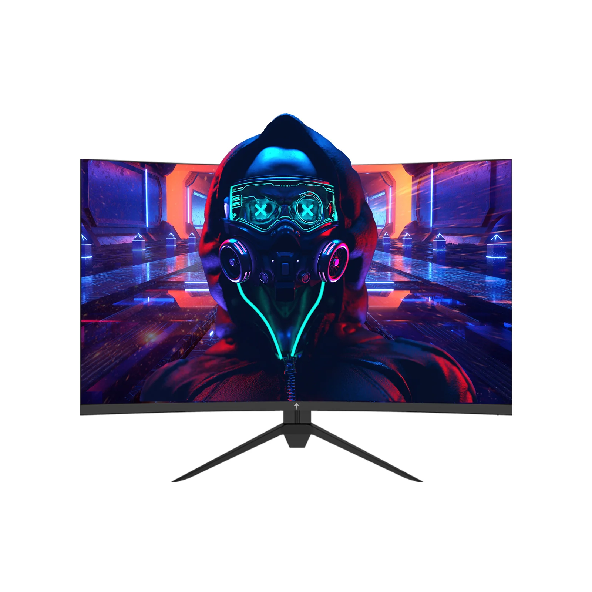

HVA & Fluide 180Hz Taux de Rafraîchissement
Débloquez une expérience de jeu sans pareille avec le moniteur de jeu KTC H32S17.
Son panneau HVA de pointe minimise le temps de réponse, le décalage et le flou de mouvement, le distinguant des panneaux VA traditionnels.
Plongez-vous dans le monde des jeux rapides et des scènes de films d'action alors que le taux de rafraîchissement de 180Hz et le temps de réponse rapide de 1ms (MPRT) offrent un mouvement fluide et une action agile.
Immersion Inégalée & Design Réfléchi
Le moniteur de jeu KTC H32S17 dispose d'une courbure impressionnante de 1500R, qui aide à réduire la fatigue oculaire et permet aux utilisateurs d'explorer même les plus petits détails avec aisance pour une expérience de visionnage incroyablement immersive.
De plus, vous pouvez ajuster le moniteur à votre angle de vision préféré en l'inclinant de -5° à 15°, ou vous pouvez le monter sur un mur ou un bras de moniteur pour plus de flexibilité.
| KTCH32S17 |  |